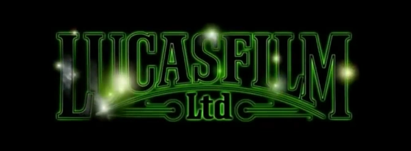

Star Wars, es una franquicia compuesta de películas, novelas, cómics, videojuegos y juguetes . Es un universo de ficción creado por George Lucas.

George Lucas nació el 14 de mayo de 1944 en Modesto, California (Estados Unidos), es el creador de star wars Se desempeñó como presidente de Lucasfilm antes de venderlo a The Walt Disney Company en 2012. Lucas inició la historia de "El Imperio contraataca", " episodio V una nueva esperanza", y "El retorno del jedi", episodio VI, de las cuales fue productor ejecutivo dejando las tareas de dirección a Irvin Kershner en El Imperio contraataca y a Richard Marquand en El retorno del Jedi.



Lucasfilm Ltd. LLC es una productora de películas estadounidense fundada por George Lucas en 1971 y presidida actualmente por Kathleen Kennedy, localizada en Marin County, California. Es mundialmente conocida por producir la saga completa de Star Wars y otros éxitos como la saga de Indiana Jones y la película American Graffiti. La compañía es líder en desarrollar nueva tecnología en cuanto a efectos especiales, sonido y animación computarizada. Recientemente, Lucasfilm ha declarado sus intenciones de abandonar la industria cinematográfica, para entrar de lleno a la producción de series televisivas.
star wars episodio iv
Perseguida por los siniestros agentes del Imperio, la Princesa Leia vuela hacia su patria, a bordo de su nave espacial, llevando consigo los planos robados, que pueden salvar a su pueblo y devolver la libertad a la galaxia…
star wars episodio v
En este episodio se desarrolla la historia de amor entre Han y Leia, mientras que Luke aprende más sobre los caminos de la Fuerza de la mano del maestro Yoda. Con Han y Leia capturados por el Imperio, Luke luchará contra Darth Vader en una confrontación sin igual, pero Vader esconde una terrible revelación.
star wars episodio vi
Luke Skywalker y la princesa Leia deben viajar a Tatooine para liberar a Han Solo. Para conseguirlo, deben infiltrarse en la peligrosa guarida de Jabba the Hutt, el gángster más temido de la galaxia.
star wars episodio i
La trama describe la historia del maestro jedi Qui-Gon Jinn y de su aprendiz Obi-Wan Kenobi, que escoltan y protegen a la Reina Amidala desde su planeta Naboo hasta Coruscant con la esperanza de encontrar una salida pacífica a un conflicto comercial interplanetario a gran escala.
star wars episodio ii
la República continúa envuelta en luchas y sumida en el caos. Un movimiento separatista formado por centenares de planetas y poderosas alianzas empresariales supone nuevas amenazas para la galaxia a las que ni siquiera los Jedi pueden poner freno.
star wars episodio iii
Años después del inicio de las Guerra de los Clones, los nobles Caballeros Jedi lideran un gran ejército clon en un combate de toda la galaxia contra los separatistas. Cuando el siniestro Sith devela un plan de mil años de antigüedad para gobernar la galaxia, la República se desmorona y de sus cenizas se eleva el malvado Imperio Galáctico.

:quality(90)/cloudfront-us-east-1.images.arcpublishing.com/elcomercio/Z5REFXCPWNCW7GRJL2CXRNKWEE.jpg)